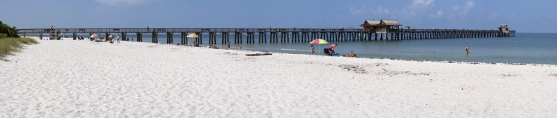
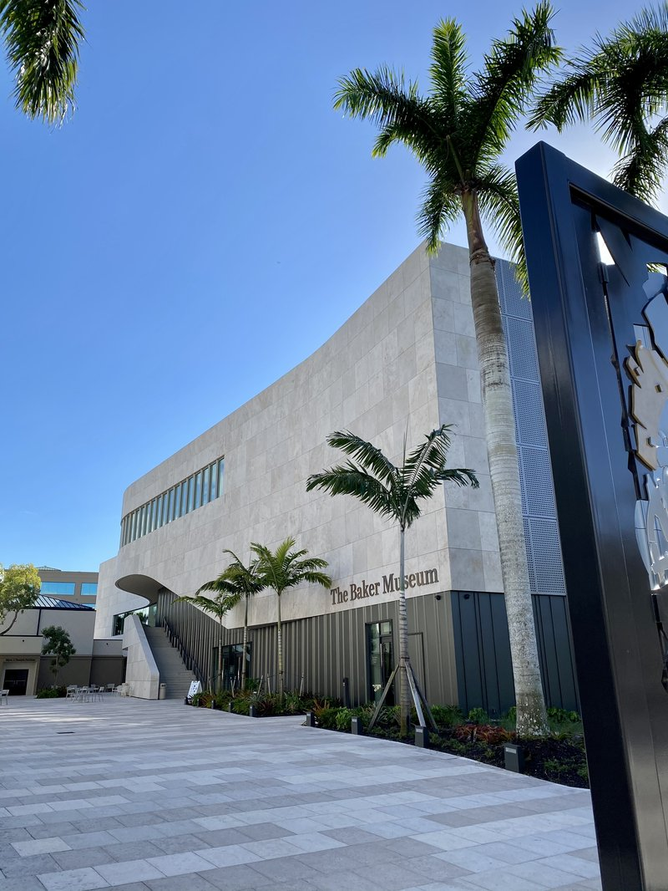
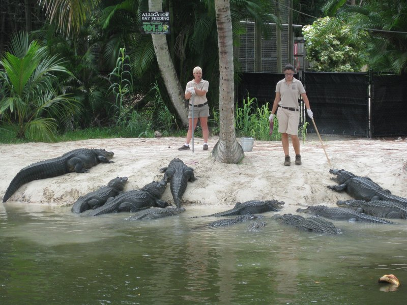
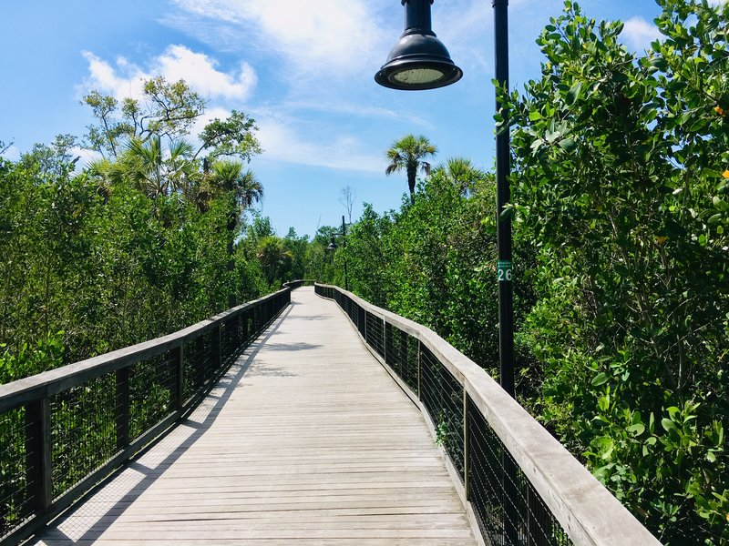

Day 1
Stop 1 · Naples Pier
↳ Gulf Coast icon and free wildlife sanctuary—dolphins, manatees, and pelicans gather year-round at this historic pier where a 30-minute walk delivers an authentic sunset ritual.

Stop 2 · Corkscrew Swamp Sanctuary
↳ A 2.25-mile boardwalk through the oldest cypress forest in North America—600-year-old trees tower above a pristine wetland that National Geographic features as one of Florida's essential birding destinations.
🏛 Daily 9am - 5:30pm
⏰ ~2 hr

Stop 3 · Delnor-Wiggins Pass State Park
↳ 166 acres of pristine undeveloped Gulf beach with hard-bottom reef ecosystem visible from shore—a rare preserved coastline where sea turtles nest seasonally (May–October) and snorkeling reveals tropical fish and marine life minutes from the parking lot.
🏛 Daily 8am - sunset
⏰ ~2 hr
No pictures found.
Day 2
Stop 1 · Baker Museum
↳ A 30,000-square-foot world-class art museum with 3,500+ modern artworks including a stunning Dale Chihuly glass collection, contemporary paintings, and rotating installations—surprising depth and quality for a community museum.
🏛 Tue–Sat 10am - 4pm · Sun 12–4pm · 🚫 Closed Mon
⏰ ~1 hr 30 min

Stop 2 · Naples Botanical Garden
↳ 170 acres of meticulously designed gardens organized by geographic regions—1,000+ orchid species, native Florida plants, and international botanical collections arranged to immerse visitors in different world ecosystems within a single afternoon walk.
🏛 Daily 9:30am - 5:30pm
⏰ ~2 hr 30 min

Stop 3 · Naples Zoo at Caribbean Gardens
↳ 44-acre facility with the signature Primate Expedition Cruise—a boat tour through islands populated by monkeys, lemurs, and exotic birds—combined with active conservation programs and sea turtle aquarium exhibits that reveal endangered species recovery efforts.
🏛 Daily 9:30am - 5:30pm
⏰ ~2 hr

Day 3
Stop 1 · Conservancy Nature Center
↳ Hands-on conservation education facility with guided 45-minute Gordon River boat tours through mangrove-lined waterways where manatees, dolphins, and wading birds live—complements water-based learning with kayak rentals and a working sea turtle aquarium.
🏛 Mon–Sat 9am - 4:30pm · Sun 11am - 4:30pm
⏰ ~1 hr 30 min

Stop 2 · Rookery Bay National Marine Estuary
↳ Protected marine estuary with interactive nature center, mangrove boardwalk, and guided kayak or boat tours through pristine wetlands where roseate spoonbills, dolphins, and manatees thrive in one of Florida's most intact coastal ecosystems.
🏛 Daily 9:30am - 4:30pm
⏰ ~2 hr
No pictures found.
🚌 Getting Around
🚕 Ride Apps
Uber and Lyft operate throughout Naples with reliable availability. Downtown pickups take 3–5 minutes. Surge pricing is minimal in low season.
🚗 Car Rental
Naples is highly car-dependent outside the walkable downtown cores. Renting is practical for multi-stop days; traffic is light except peak hours (7–9am, 5–7pm).
🚌 Local Transit
Collier Area Transit (CAT) operates fixed routes with limited frequency. Most travelers find ride-shares or rental cars more practical than scheduled buses.